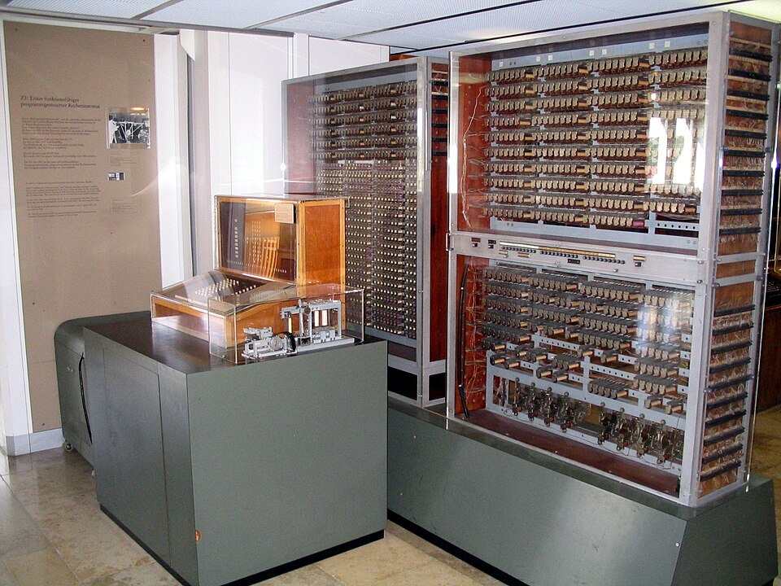
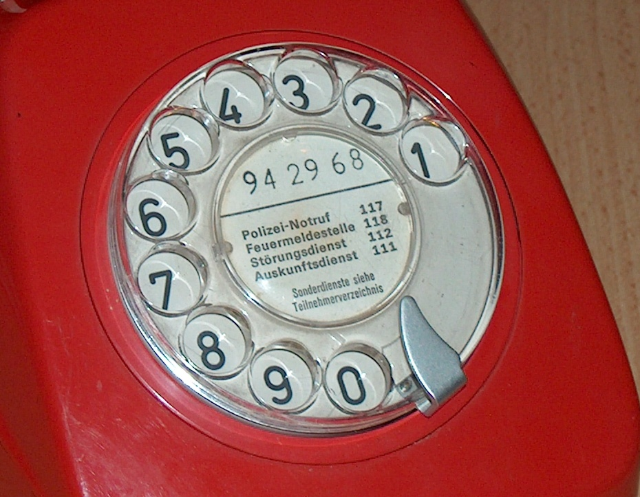

Informatik · Klasse 6
InformationenMedien
Wie kommt eine Idee von einem Kopf in den anderen?
i Hallo!
Start: Vollbild mit F . Menü mit O . Notizen mit N bei Bedarf einblenden.
Leitfrage vorlesen: „Wie kommt eine Idee von einem Kopf in den anderen?“ – kurz 2–3 Schüler antworten lassen, nicht auflösen.
Hinweis: Die Hälfte der Klasse kennt das Thema schon → diese Schüler als „Expertinnen/Experten“ ansprechen: Sie dürfen bei Denkfragen zuerst erklären.
Unsere Reise durch das Thema
Stunde 1
Stunde 2
2 💭 Information & Daten 3 📶 Daten – Information – Wissen 4 🔢 Codes im Alltag 5 📨 Kommunikationskette 6 ⏳ Zeitreise der Kommunikation 7 🧐 Medien kritisch prüfen 8 🏁 Quiz & Abschluss
Überblick geben. Die Symbole erklären: Gelb = Heft raus! Blau = Recherche am PC. Lila = Denkfrage / Partner. Rot = Quiz mit Handzeichen. Grün = Live-Demo.
Die Kapitelkarten sind anklickbar (Sprung zum Kapitel).
Dein Morgen – voller Informationen!
7:00
📱
Nachricht von Oma Text + Emoji 7:10
🥛
„Haltbar bis …“ Zahlen 7:30
🚦
Ampel wird grün Licht + Farbe
Wie viele Informationen hast du heute schon bekommen – bevor die Schule anfing?
Einstieg (ca. 4 min). Mit jedem Klick erscheint eine Karte. Schüler ergänzen eigene Beispiele: Radio im Auto, Busanzeige, Wetter-App, Geruch von Toast (!), Gesicht der Mutter …
Erwartung: „ganz viele“ – Ziel: Informationen sind überall und kommen in verschiedenen Formen (Ton, Text, Zahl, Licht).
Partner: 1 Minute – „Zählt mit eurem Nachbarn: Wie viele fallen euch ein?“
Kapitel 2 · Stunde 1
Information
Was ist eigentlich eine Information – und worauf reist sie?
Was sagt dir das?
„Gleich gewittert es.Schnell rein! “
„Stehen bleiben!
3 % „Mein Akku ist fast leer.Schnell laden! “
💡 Auf dem Bild sind nur Farben und Formen. Die Bedeutung entsteht in deinem Kopf .
Bilder einzeln besprechen: „Was denkst du, wenn du das siehst?“ – Dann aufdecken.
Kernaussage: Das Bild selbst „weiß“ nichts – erst du machst daraus eine Bedeutung. Das nennen wir Information .
Zusatzfrage: „Versteht ein Baby das Ampelmännchen?“ → Nein, es kennt die Regel noch nicht.
Eine Idee – viele Formen
Idee im Kopf:
„Mir ist kalt“
„Ich habe Hunger“
„Ich freue mich!“
💡 Die Information bleibt gleich – nur die Form ändert sich.
Live-Demo. Oben eine Idee wählen. Karten zeigen fünf Formen (Repräsentationen). 🔊 liest den Satz vor (wenn der PC eine deutsche Stimme hat), „hören“ spielt den Morse-Code.
Aktivierung: Ein Schüler zeigt die Idee ohne Worte (Geste), die Klasse rät. Neue Idee ausdenken lassen: „Ich bin müde“ → Welche Formen?
Erwartete Antwort auf „Was ist gleich geblieben?“: Die Bedeutung (= Information). Was hat sich verändert? Die Form (= Repräsentation).
Heft-Eintrag 1. Zeilen mit Klick einzeln aufdecken (A = alle). Überschrift + Datum ins Heft. Zeit geben (ca. 3 min). „Information“ und „Repräsentation“ farbig unterstreichen lassen.
Merkhilfe: Re-präsent -ation = etwas wird „präsentiert“, also in eine Form gebracht.
Worauf reisen die Zeichen?
Das Wort Trägermedium einführen: „Die Zeichen brauchen etwas, das sie trägt – wie ein Bus die Fahrgäste.“
Karten nacheinander aufdecken. Vor jeder Karte raten lassen. Neu gegenüber früher: Sand (Nachricht am Strand, verschwindet mit der Welle!) und Licht (Ampel).
Frage: „Welches Trägermedium hält am längsten?“ → Stein (Höhlenmalerei: Zehntausende Jahre). „Am kürzesten?“ → Sand, Luft.
Form oder Trägermedium ?
Ruft es in die Klasse: Form oder Medium ?
Klasse ruft laut „Form!“ oder „Medium!“ – dann Karte umdrehen (Klick oder →).
Stolperstein USB-Stick : Ist er eine Information? Nein – er trägt die Daten. Ohne Gerät und Regel ist er nur Plastik und Metall.
Beim Foto diskutieren: Das Foto auf Papier = Form (Bild) auf Medium (Papier). Beides gehört zusammen!
Heft-Eintrag 2. Zeilenweise aufdecken, abschreiben lassen (ca. 4 min).
„Interpretation“ ist ein schweres Wort → „deuten, verstehen“. Wichtig ist der Zusatz „nur mit gemeinsamer Regel“ – das wird auf den nächsten Folien gezeigt.
Wer kann diese Daten lesen?
Kerbholz eines Schäfers 20 Kerben in einem Ast.
Regel des Schäfers: 1 Kerbe = 1 Schaf
Knoten im Taschentuch Oma macht einen Knoten ins Taschentuch.
Nur Oma kennt die Regel: Knoten = „Pauls Geburtstag!“
🔑 Daten ohne gemeinsame Regel bleiben nur Zeichen.
Zuerst fragen: „Was bedeuten die 20 Kerben?“ → viele Antworten möglich (20 Tage? 20 Euro?). Genau das ist der Punkt: ohne Regel keine eindeutige Information .
Knoten: Schüler fragen, ob sie so etwas kennen (Notiz auf der Hand, Zettel am Kühlschrank). Nur wer die Regel kennt , kann interpretieren.
Das Datums -Rätsel
🎉 Einladung zur Party
05/06/27
Wann ist die Party?
Welche Regel benutzt du?
Deutschland Tag / Monat / Jahr USA Monat / Tag / Jahr Weltweit (ISO) Jahr-Monat-Tag
Eindeutig geschrieben: 2027-06-05
💡 Gleiche Zeichen – andere Regel – andere Information !
Erst fragen: „Wann ist die Party?“ (Handzeichen: 5. Juni oder 6. Mai?). Dann zwischen Deutschland und USA umschalten.
Die Zeichen „05/06/27“ ändern sich nicht – nur die Regel der Interpretation . Folge: Man kommt einen Monat zu früh oder zu spät!
ISO-Format (Jahr-Monat-Tag) ist international eindeutig – so speichern auch viele Computer Datumsangaben.
Hinweis: Das bekannte Beispiel 09.04.27 aus der letzten Präsentation kann hier gleich wiederholt werden: DE = 9. April, USA = 4. September.
Ein Buch in einer Schrift, die niemand hier lesen kann. Was steckt für uns darin?
A Informationen – da stehen doch Zeichen!
B Daten – aber für uns noch keine Information
C Gar nichts – es ist nur Papier
Die Zeichen (Daten) sind da. Zur Information werden sie erst, wenn jemand die Regel (die Schrift) kennt.
✋ Hand hoch: A, B oder C?
Abstimmung per Handzeichen, dann auflösen (→).
Richtig: B . Für jemanden, der die Schrift kann, ist es voller Informationen. Vergleich: Ägyptische Hieroglyphen konnte lange niemand lesen – bis man 1822 mit dem „Stein von Rosetta“ die Regel knackte.
Kannst du diesen Apfel essen?
Nein! 😄Bild von einem Apfel.
💡 Eine Darstellung ist nicht die Sache selbst.
Anspielung auf René Magritte, „Der Verrat der Bilder“ (1929): „Ceci n’est pas une pipe.“ Für die Klasse reicht der Apfel.
Weitere Beispiele: Ein Foto von Oma ist nicht Oma. Eine Landkarte ist nicht die Stadt. Das Wort „Feuer“ ist nicht heiß.
🎨 Form+
📄 Medium+
🧠 Regel-Kenner=
💡 Information
Heft-Eintrag 3 – die drei wichtigsten Sätze der Einheit. Groß und ordentlich, evtl. in einen Kasten.
„Information reist nie nackt“: Eine Information braucht immer eine Form (Kleidung) und ein Medium (Fahrzeug). Die Formel unten kann als Bild ins Heft.
Kapitel 3 · Stunde 1
Daten –
Drei Stufen auf einer Treppe.
D I W
Die Wissens -Treppe
🤒 Fieber🌧️ Wetter🔋 Akku
2 · Information
„Ich habe 38,9 °C Fieber.“
Zeichen + Bedeutung
3 · Wissen
„Bei Fieber bleibe ich im Bett und trinke viel.“
verknüpfen + anwenden
Stufen nacheinander aufdecken. Oben kann man das Beispiel wechseln (Fieber, Wetter, Akku).
Fragen: „Was sagt dir ‚38,9‘ ganz allein?“ → nichts Genaues (Preis? Temperatur? Zeit?). „Und wenn ich sage: Das Thermometer zeigt 38,9?“ → Fieber! = Information. „Was machst du jetzt damit?“ → Wissen: verknüpfen mit dem, was ich schon weiß, und handeln .
Wissen = Informationen, die ich verknüpfe und anwenden kann (neuer Merksatz, passt zu den bisherigen).
Heft-Eintrag 4. Am besten als Treppe ins Heft zeichnen lassen (drei Stufen von unten nach oben). Eigenes Beispiel ergänzen lassen (z. B. Akku 12 %).
Daten, Information oder Wissen ?
„Ein Apfel kostet 1,29 €.“
INFORMATION
„Für 5 € bekomme ich 3 Äpfel – und Geld zurück.“
WISSEN
„Die Ampel ist rot.“
INFORMATION
„Bei Rot warte ich, sonst kann mich ein Auto erwischen.“
WISSEN
✋ 1 Finger = Daten · 2 Finger = Information · 3 Finger = Wissen
Klasse zeigt mit Fingern (1/2/3). Dann Karte umdrehen.
„01001000“ sind Bits – für den Computer der Buchstabe „H“ (Ausblick auf Bit/Byte, Lehrplan Kl. 5/6).
Kapitel 4 · Stunde 1
Codes
Strichcode, QR-Code, Verkehrszeichen, Emojis: Überall stecken Regeln.
Überall Codes !
4 001234 567891 Strichcode
QR-Code
😂 Emoji
⛅ Wettersymbol
Blindenschrift
Ampel
🔑 Ein Code ist eine vereinbarte Regel : Welches Zeichen bedeutet was?
Frage: „Was haben alle acht Dinge gemeinsam?“ → Sie sind Zeichen, die etwas bedeuten – aber nur, wenn man die Regel kennt.
Blindenschrift (Braille): Punkte werden mit den Fingern ertastet. Das Beispiel zeigt ein Zeichen aus 6 Punkten.
Was „liest“ die Kasse ?
🧃 Apfelsaft🥣 Schoko-Müsli📒 Heft A4
Striche (Daten) → Scanner (liest Zahl) → Datenbank (Regel) → „Apfelsaft 1 l 1,19 €“ (Information)
Produkt wählen → Scannen . Der Scanner liest nur eine Zahl aus dicken und dünnen Strichen. Erst die Datenbank der Kasse (die Regel) sagt: Diese Zahl = Apfelsaft, 1,19 €.
Dann Häkchen „Kasse kennt die Regel“ ausschalten und nochmal scannen → „Artikel unbekannt“. Genau wie bei „20 Kerben“ ohne Regel!
Die Strichcodes sind echt berechnete EAN-13-Codes (mit Prüfziffer), aber erfundene Produkte. Die Ziffern 400–440 am Anfang stehen für Deutschland (Recherche-Frage A).
Ein QR-Code – live gemacht
📱 Scannt mich – wenn Handys erlaubt sind!
Text eintippen (Pfeiltasten wirken im Eingabefeld nicht – mit Esc das Feld verlassen, dann wieder weiter mit →).
Mit Tablet/Handy (falls erlaubt) scannen → Der Text erscheint. Die App kennt die Regel , wie die Kästchen zu lesen sind.
„Augen“ = Positionsmuster: Daran erkennt die Kamera, wo oben links ist – egal wie schief man das Handy hält.
Mehr Text → mehr Kästchen. Ausprobieren: kurzer Text vs. langer Text.
Code-Knacker : Was bedeutet das?
Verkehr
Anhalten!auch wenn niemand kommt
ZebrastreifenFußgänger haben Vorrang
Vorfahrt achtendie anderen dürfen zuerst
Wetter
Chat
👍
„Super!“in manchen Ländern aber unhöflich!
🙏
„Bitte“? „Danke“?oder ein High five?
💀
„Gefahr!“?im Chat oft: „Ich lach mich tot“
Reihe für Reihe raten lassen, dann umdrehen.
Verkehrszeichen : Die Regel ist gesetzlich festgelegt – alle müssen sie kennen (Fahrradprüfung Kl. 4!). Das STOP-Schild hat eine besondere Form (Achteck), damit man es auch von hinten oder verschneit erkennt.
Emojis : Hier ist die Regel nicht für alle gleich! 🙏 heißt in Japan „bitte/danke“, manche sehen darin ein High five. 💀 benutzen Jugendliche für „Ich lach mich tot“ – Oma denkt vielleicht an Gefahr. → Missverständnisse im Chat!
Heft-Eintrag 5. Neben den Eintrag 2–3 kleine Codes zeichnen lassen (Stoppschild, Wettersymbol, Emoji).
Verbindung zu Heft-Eintrag 2: Interpretation klappt „nur mit gemeinsamer Regel“ – ein Code ist so eine Regel.
So recherchierst du
www.fragfinn.de
fragFINN Suchmaschine für Kinder Brieftaube Geschwindigkeit 🔍
www.blinde-kuh.de
Blinde Kuh Suchmaschine für Kinder Emoji Geschichte 🔍
Dort findest du nur Seiten, die für Kinder geprüft sind.
1 Wenige Suchwörter „Brieftaube Geschwindigkeit“ statt „Wie schnell fliegt eigentlich eine Brieftaube?“
2 Mehrere Treffer vergleichen Steht es auf zwei Seiten gleich?
3 Quelle notieren Name der Webseite aufschreiben
4 In eigenen Worten nicht abschreiben – selbst formulieren!
Kindgerechte Suchmaschinen (Lehrplan: Suchstrategien, Quellenangaben): fragFINN.de und blinde-kuh.de . Die Browser-Fenster hier sind nur Zeichnungen (offline).
Falls die Schule eine eigene Schul-Suche nutzt, diese nennen.
Tipp 4 ist wichtig (Urheberrecht): Antworten selbst formulieren , Quelle angeben.
Code-Detektive: Wählt eine Karte!
A StrichcodeWas bedeuten die ersten Ziffern unter einem Strichcode?
Strichcode Ziffern EAN Code
B QR-CodeWer hat den QR-Code erfunden – und wofür ?
QR-Code Erfindung
C EmojisAus welchem Land kommen Emojis? Was bedeutet das Wort ?
Emoji Geschichte
D BlindenschriftWer hat sie erfunden? Aus wie vielen Punkten besteht ein Zeichen?
Blindenschrift Kinder Braille
Suche mit: 🔍 fragFINN 🐮 Blinde Kuh
Buchstabe + Thema 2 Fakten in eigenen WortenQuelle (Name der Webseite)
Recherche 5 min , Partnerarbeit am PC. Timer mit „Start“ oder groß mit T . Danach 2–3 Gruppen kurz vorstellen lassen (je 30 s).
Erwartete Antworten:
A Strichcode: Die ersten 2–3 Ziffern (Länderpräfix) zeigen, wo die Nummer vergeben wurde: 400–440 = Deutschland . Danach Hersteller-, Artikelnummer und eine Prüfziffer.B QR-Code: 1994 von der japanischen Firma Denso Wave (Masahiro Hara) erfunden, um Autoteile in Fabriken schnell zu erkennen. QR = „Quick Response“ (schnelle Antwort).C Emojis: aus Japan , ca. 1999 (Shigetaka Kurita, erste Sammlung mit 176 Zeichen). „e“ = Bild, „moji“ = Schriftzeichen.D Blindenschrift: Louis Braille (Frankreich, selbst blind), 1825 mit 16 Jahren entwickelt; jedes Zeichen aus bis zu 6 Punkten (2 × 3).
Expertinnen/Experten (Schüler, die das Thema schon hatten) als Helfer einsetzen.
Blitzlicht zum Schluss
Erkläre deinem Nachbarn in einem Satz : Was ist der Unterschied zwischen Daten und Information ?
🤔 1. Denken 30 Sekunden allein
🗣️ 2. Austauschen mit dem Nachbarn
🙋 3. Vorstellen 2–3 Sätze für alle
Nächste Stunde: 📨 Kommunikationskette · ⏳ Zeitreise · 🧐 Medien-Check
Ende Stunde 1 (ca. 2 min). Erwartung: „Daten sind die Zeichen, Information ist die Bedeutung im Kopf.“
Hausaufgabe (optional): „Finde zu Hause drei Codes (z. B. in der Küche) und schreibe auf, was sie bedeuten.“
Kapitel 5 · Stunde 2
Die Kommunikationskette
Wie kommt eine Nachricht von Lena zu Tom – und wo kann sie verloren gehen?
Beginn Stunde 2. Zuerst kurze Wiederholung (nächste Folie), dann Kommunikationskette (ca. 10 min).
Weißt du’s noch ?
Information ist …
die Bedeutung (im Kopf).
Nenne drei Trägermedien!
Papier, Bildschirm, Luft, Holz, Stein, USB-Stick …
Warum lesen Amerikaner „05/06“ anders?
Sie benutzen eine andere Regel : Monat / Tag.
⭐ Immer: Form + Medium + jemand, der die Regel kennt.
Schnelle Wiederholung (3 min). Schüler antworten mündlich, dann aufdecken. Den Merksatz im Chor sprechen lassen.
Wo knackt die Kette?
Sender Lena
Empfänger Tom
„Treffen um 15 Uhr am Spielplatz!“
…
✉️
▶ Normal senden📵 WLAN aus🔊 Lärm🌍 Fremde Sprache⌨️ Tippfehler🔋 Akku leer
Klicke auf Normal senden oder wähle eine Störung !
Erst „Normal senden“ zeigen. Dann bei jeder Störung vorher fragen : „Wo knackt die Kette – beim Sender, beim Medium oder beim Empfänger?“ Dann klicken.
WLAN aus → Medium: Die Daten kommen gar nicht an.Lärm (Sprachnachricht auf dem Schulhof) → Medium Luft gestört: nur Teile kommen an.Fremde Sprache (Finnisch) → Empfänger: Daten kommen an, aber keine gemeinsame Regel.Tippfehler („51 Uhr“) → Sender: Idee falsch in die Form gepackt.Akku leer → Empfänger: Die Nachricht wartet, aber niemand liest sie.
Schüler weitere Störungen erfinden lassen (Handschrift unleserlich, Brief nass geworden, falsche Nummer …).
Heft-Eintrag 6. Als Kette mit drei Kästen und Pfeilen ins Heft zeichnen. Unter jeden Kasten den Satz in Anführungszeichen.
Beispiel dazuschreiben lassen: Lena → Handy/WLAN → Tom.
Findet die Kette !
🔔 Die Pausenklingel S: Hausmeister/Uhr · M: Luft · E: alle SchülerStörung: Kopfhörer, Lärm
🚉 Durchsage am Bahnhof S: Bahn-Mitarbeiter · M: Lautsprecher + Luft · E: ReisendeStörung: Zug fährt ein, Nuscheln
🏖️ Postkarte aus dem Urlaub S: Oma · M: Papier + Post · E: duStörung: Regen, falsche Adresse
🚒 Sirene der Feuerwehr S: Feuerwehr · M: Luft (Ton) · E: alle in der NäheStörung: Man kennt die Regel nicht
Auftrag (zu zweit):2 Situationen aus. Wer ist Sender , was ist das Medium , wer ist Empfänger ? Was könnte stören ?
3 min Partnerarbeit, danach Lösungen aufdecken (klicken). Mehrere Lösungen sind richtig – begründen lassen!
Sirene: Es gibt feste Signale (z. B. 1 Minute auf- und abschwellender Ton = Warnung). Wer die Regel nicht kennt, weiß nicht, was zu tun ist.
Kapitel 6 · Stunde 2
Zeitreise der
Von der Höhlenwand bis zum Smartphone.
„Ich komme morgen !“
Du willst das deiner Freundin in Berlin sagen. Wie geht das …
🔥 vor 40 000 Jahren?
🏰 vor 500 Jahren?
📱 heute?
📏 Wie weit? Wie weit kommt die Nachricht?
⏱️ Wie schnell? Wie lange dauert es?
👥 Wie viele? Wie viele Menschen erreicht sie?
Erwartete Ideen: vor 40 000 Jahren → gar nicht (hinlaufen, Wochen!). Vor 500 Jahren → Brief mit Bote/Pferd (Tage). Heute → Nachricht, Sekunden.
Die drei Leitfragen begleiten die ganze Zeitreise. Tafel: drei Spalten „weit / schnell / viele“.
Mit → geht es Station für Station weiter (oder auf die Punkte klicken). Bei jeder Station die drei Leitfragen stellen, dann die Balken zeigen.
Höhlenmalerei: älteste bekannte Höhlenbilder sind über 40 000 Jahre alt (z. B. Sulawesi/Indonesien). Lascaux (Foto) ca. 17 000 Jahre.Rauchzeichen/Trommeln: schnell und weit sichtbar/hörbar – aber nur einfache, vorher vereinbarte Nachrichten.Buchdruck: Gutenberg, Mainz, um 1450 – bewegliche Metall-Buchstaben.Telegraf: Samuel Morse, 1844 erste lange Leitung Washington–Baltimore.Telefon: Philipp Reis 1861 (Deutschland), Alexander Graham Bell 1876 (Patent).Radio/TV: Rundfunk in Deutschland ab 1923, Fernsehen im Wohnzimmer ab den 1950ern. Viele Empfänger, aber nur eine Richtung .Z3: Konrad Zuse, Berlin 1941 – erster funktionsfähiger programmierbarer Computer.Internet: 1969 erste Verbindung (ARPANET, USA), 1991 World Wide Web (Tim Berners-Lee, CERN).Smartphone: ab 2007 massenhaft verbreitet – alle Formen in einem Gerät.
Funken wie 1844 : Morse-Code
Lautsprecher an! Text eintippen (Esc verlässt das Feld) → „Funken“: Lampe blinkt, Töne erklingen.
Spiel „Geheimwort“: Ein Wort wird gefunkt, aber nicht angezeigt. Die Klasse schreibt die Zeichen mit (kurz = Punkt, lang = Strich) und entschlüsselt mit der Tabelle. Tipp: „langsam“ wählen.
SOS (··· −−− ···) ist das berühmteste Notsignal – leicht zu funken und zu erkennen. Morse = Form (Code), Draht/Strom = Medium.

Nachbau der Z3 im Deutschen Museum · Foto: Venusianer, CC BY-SA 3.0
Die Z3 von Konrad Zuse
📅 1941 in Berlin gebaut🥇 erster funktionierender programmierbarer Computer 🔌 ca. 2 600 Relais (Schalter)🐢 für eine Plus-Rechnung: fast 1 Sekunde
📱 Dein Smartphone: Milliarden Rechnungen pro Sekunde!
Was kann dein Handy, was die Z3 nicht konnte?
Z3: vorgestellt am 12. Mai 1941, rechnete mit 0 und 1 (binär), ca. 1 Tonne schwer. Das Original wurde 1943 im Krieg zerstört, der Nachbau steht im Deutschen Museum München.
Zum Vergleich ENIAC (USA, 1945/46): ca. 27 Tonnen, 17 468 Elektronenröhren – oft als „erster elektronischer Universalrechner“ bezeichnet. Z3 = elektromechanisch (Relais).
Erwartete Antworten zur Denkfrage: Fotos, Videos, Musik, Internet, Nachrichten schicken, in die Hosentasche passen …
Heft-Eintrag 7 als Tabelle (3 Spalten). Zeilen nacheinander aufdecken. Schnelle Schüler ergänzen eine Zeile „Telefon – 1861/1876 – Draht – Stimme“.
Zeitreise-Reporter: Wählt eine Erfindung!
A BuchdruckWann und wo druckte Johannes Gutenberg ? Was war neu?
Gutenberg Buchdruck
B TelefonWer war Philipp Reis ? Welchen Satz übertrug er zuerst?
Philipp Reis Telefon
C BrieftaubenWie schnell und wie weit fliegt eine Brieftaube?
Brieftaube Geschwindigkeit
D Die erste SMSWann wurde sie verschickt – und was stand drin ?
erste SMS
Suche mit: 🔍 fragFINN 🐮 Blinde Kuh
Wann? Wer? Wie weit / schnell / viele? Quelle (Webseite)
Recherche 6 min (Partner), danach Reporter-Runde: jede Gruppe 1 Satz (3 min).
A Buchdruck: um 1450 in Mainz . Neu: bewegliche Buchstaben aus Metall, die man immer wieder neu zusammensetzen kann → viele gleiche Bücher schnell (berühmt: Gutenberg-Bibel).B Telefon: Philipp Reis, Lehrer aus Friedrichsdorf (Hessen), 1861. Erster Satz: „Das Pferd frisst keinen Gurkensalat.“ Bell meldete 1876 das Patent an.C Brieftauben: finden nach Hause zurück; ca. 60–100 km/h , Strecken von mehreren hundert Kilometern (Rekorde über 1000 km). Früher für Nachrichten im Krieg und für Zeitungen.D Erste SMS: 3. Dezember 1992 in England, Text: „Merry Christmas“ (von einem Computer an ein Handy).
Kapitel 7 · Stunde 2
Medien
Kann ein echtes Foto täuschen? Und wem kann ich glauben?
? Kapitel 7: ca. 13 min inkl. Recherche (6 min). Lehrplan: Fake News, Quellen, kindgerechte Suche.
Ein Foto – zwei Geschichten
Bildausschnitt
🔍 Ausschnitt 🖼️ Ganzes Bild
Überschrift
keine Überschrift A Überschrift B
Ablauf: 1) Nur den Ausschnitt zeigen, ohne Überschrift: „Was ist hier passiert?“ (viele denken: Streit, Schubsen). 2) Überschrift A („Brutal!“) einblenden – verstärkt den Eindruck. 3) Ganzes Bild : Ball, ein Kind bringt Pflaster, die Lehrerin lächelt → Ein Kind ist beim Fußball gestürzt, das andere hilft. 4) Überschrift B .
Kernaussage: Auch ein echtes Foto kann täuschen – durch Ausschnitt und Überschrift . Nichts ist gefälscht, und trotzdem entsteht ein falscher Eindruck.
Medien können steuern
📰 Überschrift „Chaos!“ oder „Tolle Pause!“ – sie sagt uns, was wir denken sollen .
✂️ Bildausschnitt Was weggeschnitten ist, sehen wir nicht.
🎨 Farbe & Musik Rot und dramatische Musik = Gefahr! Blau und ruhige Musik = alles gut.
🔀 Reihenfolge & Weglassen Was zuerst kommt, wirkt wichtig. Was fehlt , erfahren wir nie.
Beispiele aus der Lebenswelt: Werbung (Farbe/Musik), YouTube-Vorschaubilder mit roten Pfeilen und Schock-Gesichtern („Clickbait“), Nachrichten-Überschriften.
Frage: „Wo habt ihr so etwas schon gesehen?“
EILMELDUNG!!! 😱 KEINE SCHULE mehr – für immer!!! Die Regierung hat es beschlossen.SOFORT TEILEN!!!
Woran merkst du, dass hier etwas faul ist?
❓ Keine Quelle – wer ist „news4u_echt“?❗ Viele Ausrufezeichen und GROSSBUCHSTABEN⏰ „Sofort teilen!“ – Druck, nicht nachzudenken🍭 Zu schön (oder zu schlimm), um wahr zu sein🔎 Steht nirgendwo sonst – z. B. nicht bei logo! oder in der Zeitung
Erst sammeln lassen (1 min zu zweit), dann Punkte aufdecken.
Wichtig: Viele Likes bedeuten nicht , dass etwas stimmt. Gute Kindernachrichten: logo! (ZDF), Die Sendung mit der Maus , Kinderzeitungen .
Heft-Eintrag 8. Die drei Fragen als Checkliste mit Kästchen ☐ ins Heft. Merksatz zur Suche darunter.
Mythen-Jäger: Stimmt das – oder nicht?
A 🐠 Goldfische„Goldfische vergessen alles nach 3 Sekunden .“
Goldfisch Gedächtnis
B 🐂 Stiere„Stiere werden wütend, wenn sie die Farbe Rot sehen.“
Stier rot Farbe
C 🌙 Chinesische Mauer„Man kann sie vom Mond aus sehen.“
Chinesische Mauer Mond
D 🍬 Kaugummi„Verschluckter Kaugummi bleibt 7 Jahre im Magen.“
Kaugummi verschluckt
Suche mit: 🔍 fragFINN 🐮 Blinde Kuh
Stimmt / stimmt nicht Begründung in 1 Satz 2 Quellen (Webseiten)
Recherche 6 min , dann Auflösung (2 min). Ziel: den Medien-Check anwenden – zwei Quellen vergleichen!
Alle vier Behauptungen stimmen nicht:
A: Goldfische können sich Monate lang an Dinge erinnern (z. B. Fütterungszeiten, Töne).B: Stiere sehen Rot nicht besonders; sie reagieren auf die Bewegung des Tuchs.C: Die Mauer ist nur wenige Meter breit – vom Mond (ca. 384 000 km) unsichtbar . Selbst aus dem Weltall nur schwer zu erkennen.D: Kaugummi wird nicht verdaut, aber nach wenigen Tagen ganz normal ausgeschieden.
Diskussion: Warum verbreiten sich solche Mythen? (klingen lustig/überraschend, werden weitererzählt, niemand prüft nach).
Kapitel 8 · Stunde 2
Quiz &
Drei Fragen – wer weiß es?
1 Abschluss ca. 5 min. Quizfragen per Handzeichen, danach Exit-Ticket.
Tom bekommt die Nachricht 🥶 . Was ist das Emoji?
A die Information
B eine Form (Repräsentation)
C das Trägermedium
D der Empfänger
Das Emoji ist die Form . Die Information („Mir ist kalt“) entsteht erst in Toms Kopf.
✋ Hand hoch: A, B, C oder D?
Welche Erfindung gab es zuerst ?
A ☎️ Telefon
B 📜 Buchdruck
C 📻 Radio
D 📡 Telegraf
Buchdruck (um 1450) → Telegraf (1844) → Telefon (1861/1876) → Radio (ab 1923 in Deutschland).
✋ Hand hoch: A, B, C oder D?
Im Netz steht: „Handys laden sich in der Mikrowelle in 1 Minute auf!“ Was tust du?
A Sofort ausprobieren
B An alle Freunde schicken
C Quelle prüfen und woanders nachsehen
D Glauben – steht ja im Internet
Medien-Check! Wer? Wozu? Wo noch? (Und: Das stimmt natürlich nicht – das Handy wird zerstört und es kann brennen!)
✋ Hand hoch: A, B, C oder D?
Richtig: C . Diese Falschmeldung gab es wirklich (2014, „Wave“-Update) – Menschen haben ihre Handys zerstört.
Exit-Ticket: Das kann ich jetzt
Information , Daten und Trägermedium unterscheiden.Kommunikationskette erklären und Störungen finden.Codes aus dem Alltag und weiß: Man braucht die Regel.3 Erfindungen der Kommunikation ordnen.Wer? Wozu? Wo noch?
🎟️ Auf einen Zettel:
„Information reist nie nackt, weil …“
👍 ✊ 👎
Daumen-Abfrage zu jedem Satz
Zu jedem „Ich kann“-Satz: Daumen hoch / Mitte / runter. Exit-Ticket beim Rausgehen abgeben.
Gute Antwort: „… weil sie immer eine Form (z. B. Text, Emoji) und ein Medium (z. B. Papier, Bildschirm) braucht – und jemanden, der die Regel kennt.“
Bildnachweis & Lizenzen
Höhlenmalerei, Lascaux (Frankreich) https://commons.wikimedia.org/wiki/File:Lascaux_painting.jpg
Nachbau der Zuse Z3, Deutsches Museum München https://commons.wikimedia.org/wiki/File:Z3_Deutsches_Museum.JPG

Telefon-Wählscheibe https://commons.wikimedia.org/wiki/File:Waehlscheibe-kurzwahlnummern.jpg
✏️ Alle Zeichnungen & Icons
🔤 Schriften: Nunito & Fredoka
▦ QR-Code-Erzeugung: qrcode-generator 2.0.4
😀 Emojis
Alle Zeichnungen (SVG) sind selbst erstellt. Fotos von Wikimedia Commons, lokal gespeichert. Emojis werden von der Systemschrift des Computers dargestellt.